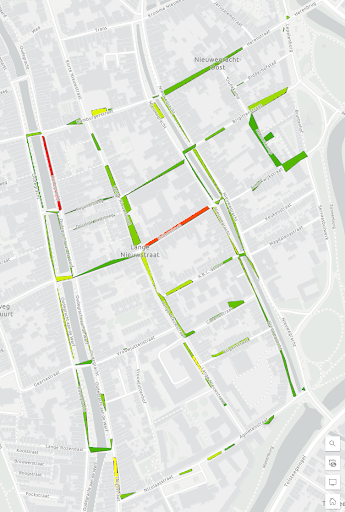
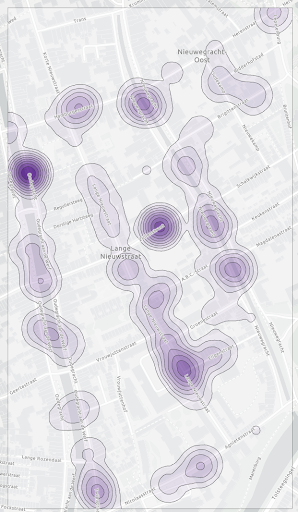

Vector Map
Data Collection
For this assignment, we worked with ArcGIS online. First of all, we collected data using the mobile app in groups throughout Utrecht. This taught us about the difficulties and strenuous work that goes into data collection. We were interested in bike density throughout Utrecht, to see whether in certain areas, parked bikes would be in higher numbers.
Parked Bike Density In Utrecht
We ran into some problems during this assignment. The data we had was formatted as polygons containing values, rather than points. This way, we were not able to calculate the density to create a density map, or use tools like hotspots. We first converted the data from a feature to a raster layer. This way we could create a colour scheme that would reflect the differences in values between the created squares. This is visible in the image to the left. You can see that two streets are coloured red, therefore having higher numbers of parked bikes. We eventually transformed the fields into centroids by using the “find centroid” tool. This way, we could treat them as points with values, which is actually usable for a density map. This created the map to the right. Once again, the same streets with higher numbers of parked bikes pop out.
We also merged layers containing data available through ArcGIS online with our own to make a graph of possible links between data. We used a map with data showing, among others, the population density in small areas in Utrecht. We tried finding a possible link between population density and bike density, as seen in the graph below. However, as seen in the scatterplot, there seems to be no correlation between the two.